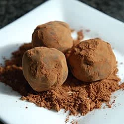

Chocolate Orange Truffles

Description
Use orange liqueur or orange juice to flavor these dipped truffles. This is a very easy recipe, requiring no candy thermometer and no sensitive tempering of the chocolate.
Ingredients
- 1/4 cup unsalted butter
- 3 tablespoons heavy cream
- 4 squares semisweet chocolate, chopped
- 2 tablespoons oragne liqueur
- 1 teaspoon grated orange zest
- 1 tablespoon vegetable oil
Steps
- In a medium saucepan over medium-high heat, combine butter and cream. Bring to a boil, and remove from heat. Stir in 4 ounces chopped chocolate, orange liqueur, and orange zest; continue stirring until smooth. Pour truffle mixture into a shallow bowl or a 9X5 in loaf pan. Chill until firm, about 2 hours.
- Line a baking sheet with waxed paper. Shape chilled truffle mixture by rounded teaspoons into small balls (a melon baller also works well for this part). Place on prepared baking sheet. Chill until firm, about 30 minutes.
- In the top of a double boiler over lightly simmering water, melt remaining 4 ounces chocolate with the oil, stirring until smooth. Cool to lukewarm
- Drop truffles, one at a time, into melted chocolate mixture. Using 2 forks, lift truffles out of the chocolate, allowing any excess chocolate to drip back into the pan before transferring back onto baking sheet. Chill until set.